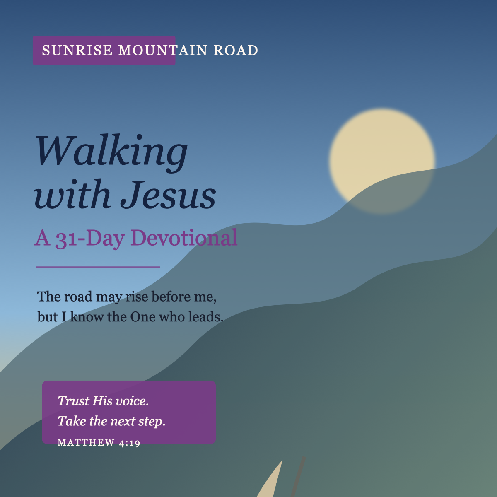
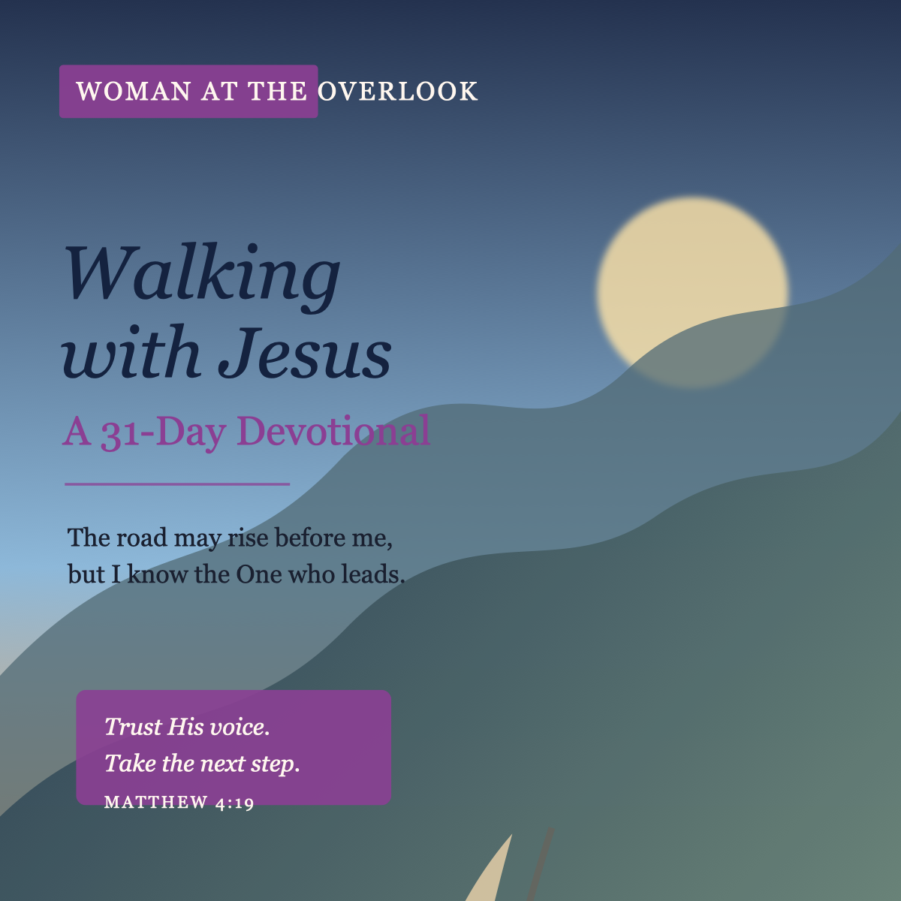
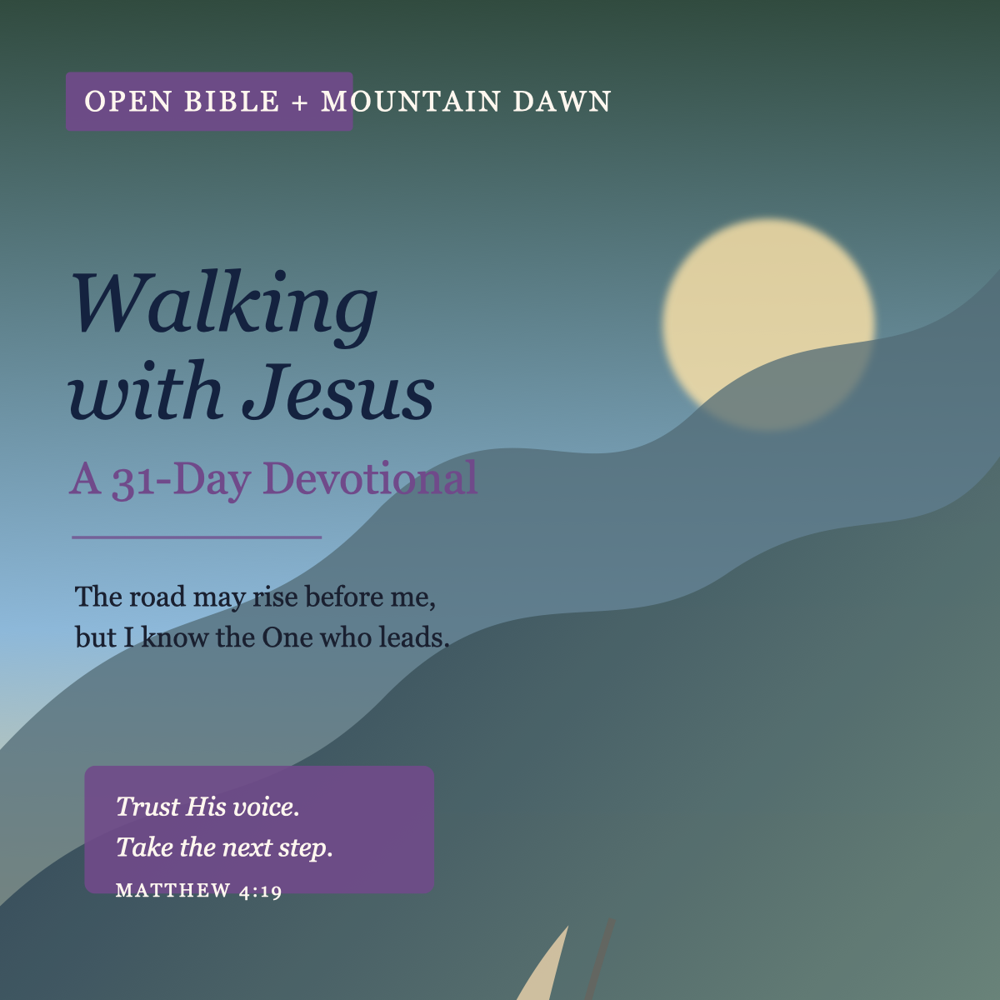
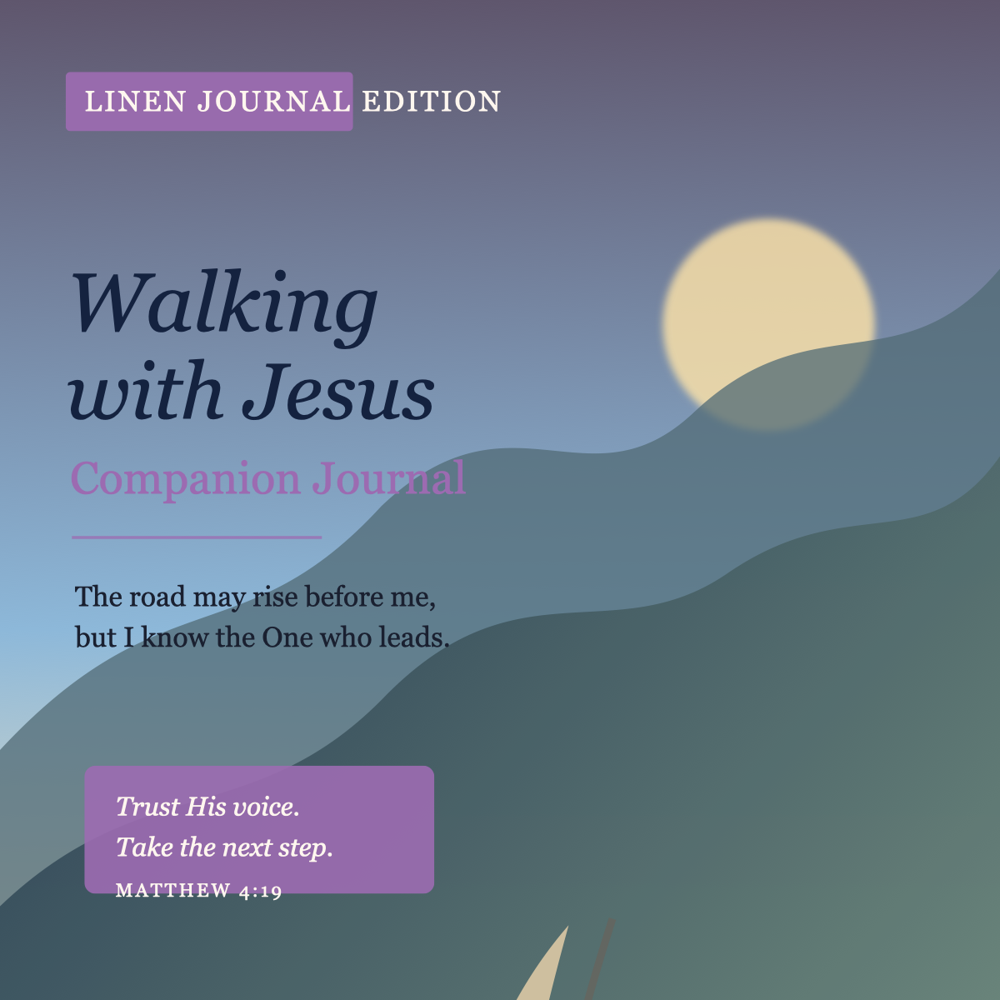
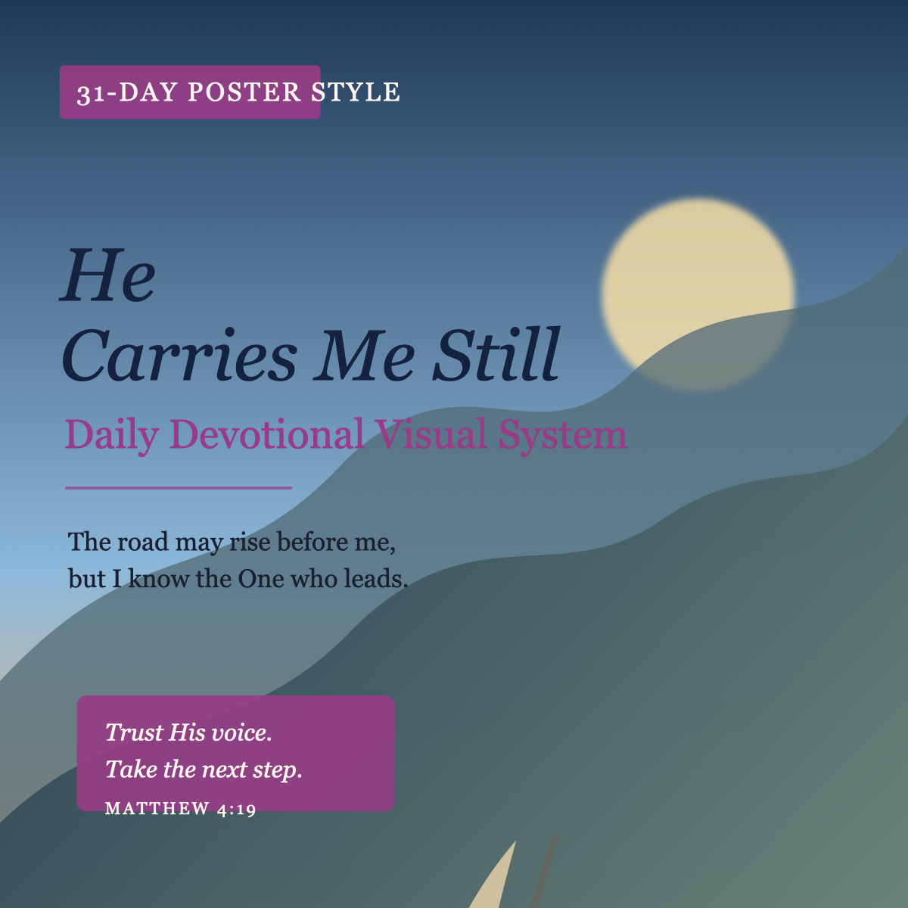

Meeting slide 1
Lady D Author Review
Walking with Jesus rough package, 31-day proof concept, and 365-day expansion deck for live Google Meet review.
Toggle HTML review package for Susan “Lady D” Damon: meeting-ready rough draft, devotional gap analysis, author voice notes, cover concept gallery, and a clickable 365-day expansion deck.
Local concept comps only. Frontier render credentials were blocked earlier, so these are direction-setting mockups for the meeting, not final AI image renders.





Working series owner: Susan “Lady D” Damon
Prepared for live review: rough working copy, not final proof
Core rule from Jon’s clarification: this devotional belongs to Lady D. Scripture translation is flexible unless Lady D states one locked version. Different translations may be used when they bring out deeper beauty, clarity, and meaning. Track every translation for final permissions review.
This keeps Lady D’s monthly theme vision but avoids locking the reader into a dated calendar year.
Scripture: “Come, follow me,” Jesus said, “and I will send you out to fish for people.” — Matthew 4:19
Walking with Jesus begins with an invitation. Jesus does not force His way into your life, and He does not pressure you into purpose. He simply says, “Come.” That one word carries love, patience, direction, and promise. It is the voice of the Savior calling you away from where you have been and into the life He already sees for you.
Following Jesus does not mean you have every answer before you take the first step. The disciples did not know every place the road would lead when they left their nets. They only knew the One who called them was worth trusting. In the same way, Jesus is not asking you to understand the whole journey today. He is asking you to trust Him with the next step.
There will be moments when your heart wants a map, but Jesus gives you His presence. There will be moments when you want certainty, but He teaches you faith. Walking with Him is a daily surrender of your own direction so He can lead you into His. And the more you walk with Him, the more you learn that He never leads you to defeat. He leads you into growth, healing, obedience, and promise.
Today, Jesus is still whispering, “Follow Me.” Not just into church, not just into ministry, but into peace, restoration, courage, and deeper love. He knows where He is taking you even when the road feels unclear. Trust the invitation. Your journey begins with one step toward Him.
Prayer: Jesus, thank You for calling me to follow You. Give me courage to take the next step even when I do not understand the whole path. Help me trust Your voice above fear, above pressure, and above my own timing. Lead me closer to You every day. Amen.
Journal Prompt: What part of your life is Jesus inviting you to surrender so you can follow Him more fully?
Scripture: “Remain in me, as I also remain in you.” — John 15:4
Walking with Jesus requires closeness. It is not enough to know about Him from a distance; He invites you to remain in Him. To remain means to stay connected, to stay rooted, to keep returning your heart to the place where His presence can strengthen you. This is not about religious performance. This is about relationship.
When you remain in Jesus, His life begins to flow through you. Just as a branch cannot bear fruit without the vine, your heart cannot produce peace, patience, strength, and wisdom apart from Him. The world will pull you in many directions, but Jesus gently calls you back to what is steady.
Remaining in Him also teaches you to rest. Some days you may feel like you have to carry everything, fix everything, and understand everything. But Jesus did not call you to walk with Him so you could still carry life by yourself. He calls you close so you can draw from His strength.
Today, make room to remain. Pause long enough to hear His voice. Breathe long enough to remember He is with you. Stay close to the One who never lets go.
Prayer: Jesus, help me remain in You today. Keep my heart close to Your presence. Remove every distraction that pulls me away from Your peace. Teach me how to abide, how to listen, and how to rest in You. Amen.
Journal Prompt: Where in your daily routine can you make space to remain close to Jesus?
Scripture: “I am the way, the truth, and the life.” — John 14:6
When you walk with Jesus, you are never walking lost. He is not only the One who points you toward the right road; He is the way. That means your direction is not based on how much you can see. Your direction is based on Who is leading you.
Life can feel uncertain when the road changes without warning. Plans shift, people change, doors close, and your heart can become tired from trying to figure it all out. But Jesus remains steady. He knows the path before you arrive there. He knows what is ahead before you have the words to ask Him about it.
He is also the truth. When your emotions speak loudly, His truth speaks deeper. When fear tries to tell you that you are alone, His truth reminds you that He is present. When confusion tries to cloud your mind, His truth brings light.
Today, you can walk with confidence because Jesus is your path. You do not need to know everything to take the next step. You need to know Him, trust Him, and let Him lead.
Prayer: Jesus, thank You for being my way, my truth, and my life. Lead every step I take today. When I feel uncertain, remind me that You already know the road ahead. Help me trust You fully. Amen.
Journal Prompt: Where do you need Jesus to show you the way right now?
Scripture: “He restoreth my soul.” — Psalm 23:3
Walking with Jesus includes restoration. He does not only lead you forward; He restores what the journey has drained. He sees the tired places in your heart, the quiet wounds, the disappointments, and the burdens you have carried longer than you should have had to carry them.
Jesus restores gently. He does not rush your healing. He does not shame you for being weary. He meets you with compassion and gives your soul room to breathe again. His restoration is not surface-level. He reaches the places nobody else can touch.
Sometimes restoration begins when you stop pretending you are fine. Sometimes it begins when you sit still long enough to let Him speak peace over your life. Sometimes it begins when you write down what has been circling in your mind so you can see it clearly and surrender it honestly.
Today, let Jesus restore you. You do not have to keep walking empty. The Shepherd who leads you also refreshes you, strengthens you, and brings your soul back to life.
Prayer: Jesus, restore my soul today. Refresh my mind, renew my heart, and strengthen my spirit. Help me receive Your peace in the places where I have felt tired, wounded, or overwhelmed. Amen.
Journal Prompt: What part of your soul needs Jesus’ restoration right now?
Scripture: “Casting all your care upon him; for he careth for you.” — 1 Peter 5:7
There are days when the road feels long and the burden feels heavy. You may be moving forward, but deep inside you know you are tired. The beautiful truth is this: Jesus does not ask you to carry what He already invited you to give Him.
He cares for you. Not just for your ministry, not just for your service, not just for what people see, but for you. He cares about the thoughts that keep circling in your mind. He cares about the pressure you do not always talk about. He cares about the places where you smile but still feel heavy.
To cast your cares on Him is not weakness. It is wisdom. It means you know where the weight belongs. Journaling can become part of that surrender. When you take what is in your head and put it on paper, you can see it, pray over it, and release it to the One who knows how to carry it.
Today, remember that you may not see the whole road ahead, but you know the One who does. He has carried you before. He carries you now. And by His grace, He will carry you still.
Prayer: Jesus, I give You the cares I have been carrying. Help me release what was never meant to stay in my hands. Thank You for caring for me with patience, tenderness, and strength. Carry me and teach me to trust You more. Amen.
Journal Prompt: What care do you need to write down, pray over, and release to Jesus today?
The Cynthia-style poster reference works beautifully for this project, with one adjustment: instead of weekday labels, use DAY 1, DAY 2, etc. Each daily visual can include:
Immediate recommended deliverable: Walking with Jesus: A 31-Day Devotional as the proof-of-concept flagship, paired with a Walking with Jesus Companion Journal.
The transcript includes an unrelated phone-call interruption after the planning conversation. Treat that as private noise. Do not summarize, quote, or publish it.
Source basis: May 5 planning transcript, supplied 31-day *Walking with Jesus* PDF, and YouTube sermon transcript segment from bGStlm28Gyo.
Lady D writes and speaks as a warm, direct, Jesus-centered encourager. Her devotional voice is pastoral without being distant; she speaks like someone sitting beside the reader and helping them choose trust, surrender, prayer, and obedience one step at a time.
Warm, sincere, prayerful, encouraging, steady, motherly, direct, hopeful, ministry-ready, practical.
The supplied PDF says scriptures are NIV. Jon clarified that Lady D’s devotional may remain flexible unless she herself stated a locked translation preference. Mixed translations can add beauty, clarity, and devotional depth when chosen intentionally. Before final publication, build a scripture-permission lane: record each scripture translation used, confirm Lady D’s preference, and handle permissions/licensing where required.
Use the image as inspiration, not a template to plagiarize. Rebuild composition, typography, palette, and spiritual mood in IDC Publishing’s own system.
Walking with Jesus rough package, 31-day proof concept, and 365-day expansion deck for live Google Meet review.
A scroll-first review page, downloadable author-facing files, cover concept gallery, gap analysis, and a month-by-month clickable devotional expansion deck.
This devotional belongs to Lady D. Scripture translation stays flexible unless she locks one version. Every final scripture version still needs permissions tracking.
Use Day 1, Day 2, Day 3 instead of weekdays or a dated year. The devotional can be timeless while still organized internally by month/theme.
Recommended first release: Walking with Jesus: A 31-Day Devotional plus a companion journal. Days 21–31 still need source confirmation or clean completion.
The larger devotional can be grouped into 12 monthly themes. February includes a leap-day bonus slide so it can work for leap-year review.
Mountain road, sunrise, purple brush stroke labels, cream footer strips, navy title, scripture block, and reflective journal prompt.
Confirm title, scripture-version preference, 31-day vs 365 priority, companion journal shape, and landscape-only vs woman-at-overlook cover direction.